第 19 章
直方图均衡化：增强影像对比度
本章共 4 个小节 · 认识直方图 · 绘制直方图 · 直方图均衡化 · 限制自适应直方图均衡化方法
直方图均衡化是影像处理中非常重要的一环，主要是将一幅影像的色彩强度平均化。也可以说是将原始影像从比较集中某一区域，平均分布扩展到全部区域。这样可以增强对比度，让影像细节更细致与明显。这个功能的效果包括：整体影像不会太暗或太亮，也可以达到影像的去雾处理。
本章从直方图基本观念说起，再讲解直方图均衡化原理，最后用实例实作。
19-1
认识直方图
19-1-1 认识直方图
在计算机视觉领域，所谓的直方图是一个色彩灰阶值的统计次数。例如有一个 3 x 3 的影像，如果计算每一个像素值出现的次数，就可以得到像素值与出现次数的对应表。使用 Python 与 matplotlib 模块设计直方图时，像素值可用 x 轴表示，出现次数可用 y 轴表示。
程序实例 ch19_1.py：使用折线图 plot() 函数，绘制上述像素值出现的次数
# ch19_1.py
import matplotlib.pyplot as plt
seq = [1, 2, 3, 4, 5] # 像素值
times = [2, 1, 2, 1, 3] # 出现次数
plt.plot(seq, times, "-o") # 绘含标记的图
plt.axis([0, 6, 0, 4]) # 建立轴大小
plt.xlabel("Pixel Value") # 像素值
plt.ylabel("Times") # 出现次数
plt.show()
程序实例 ch19_2.py：使用直方图 bar() 函数重新设计上一个程序，产生长条图
# ch19_2.py
import matplotlib.pyplot as plt
import numpy as np
times = [2, 1, 2, 1, 3] # 出现次数
N = len(times) # 计算长度
x = np.arange(N) # 长条图 x 轴坐标
width = 0.35 # 长条图宽度
plt.bar(x, times, width) # 绘制长条图
plt.xlabel("Pixel Value") # 像素值
plt.ylabel("Times") # 出现次数
plt.xticks(x, ("1", "2", "3", "4", "5"))
plt.show()
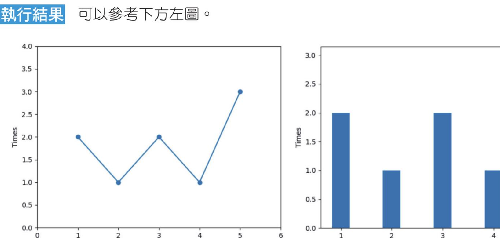
左图是 plot() 折线图，右图是 bar() 长条图；在机器视觉中可以统称为直方图。参考原书第 19-3 页。
19-1-2 归一化直方图
所谓的归一化直方图是指 x 轴仍是像素值，y 轴则是特定像素出现的频率。若继续使用上一节的实例，所有频率加总结果是 1。
| 像素值 | 1 | 2 | 3 | 4 | 5 |
|---|
| 出现频率 | 2/9 | 1/9 | 2/9 | 1/9 | 3/9 |
程序实例 ch19_3.py：使用归一化观念重新设计 ch19_1.py
# ch19_3.py
import matplotlib.pyplot as plt
seq = [1, 2, 3, 4, 5] # 像素值
freq = [2/9, 1/9, 2/9, 1/9, 3/9] # 出现频率
plt.plot(seq, freq, "-o") # 绘含标记的图
plt.axis([0, 6, 0, 0.5]) # 建立轴大小
plt.xlabel("Pixel Value") # 像素值
plt.ylabel("Frequency") # 出现频率
plt.show()
程序实例 ch19_4.py：使用归一化观念重新设计 ch19_2.py
# ch19_4.py
import matplotlib.pyplot as plt
import numpy as np
freq = [2/9, 1/9, 2/9, 1/9, 3/9] # 出现频率
N = len(freq) # 计算长度
x = np.arange(N) # 长条图 x 轴坐标
width = 0.35 # 长条图宽度
plt.bar(x, freq, width) # 绘制长条图
plt.xlabel("Pixel Value") # 像素值
plt.ylabel("Frequency") # 出现频率
plt.xticks(x, ("1", "2", "3", "4", "5"))
plt.show()
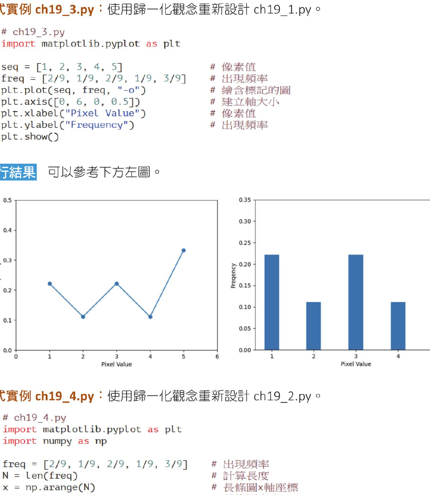
原书将 ch19_3.py 与 ch19_4.py 的程序与结果排列在同页；参考原书第 19-4 页。
19-2
绘制直方图
19-2-1 使用 matplotlib 绘制直方图
第 19-1 节所述的资料量比较少，所以分别使用了 plot() 和 bar() 函数绘制直方图。碰上整幅影像，则建议使用 hist() 函数。
程序实例 ch19_5.py：绘制 snow.jpg 影像文件的直方图
# ch19_5.py
import cv2
import matplotlib.pyplot as plt
src = cv2.imread("snow.jpg", cv2.IMREAD_GRAYSCALE)
cv2.imshow("Src", src)
plt.hist(src.ravel(), 256) # 降维再绘制直方图
plt.show()
cv2.waitKey(0)
cv2.destroyAllWindows()
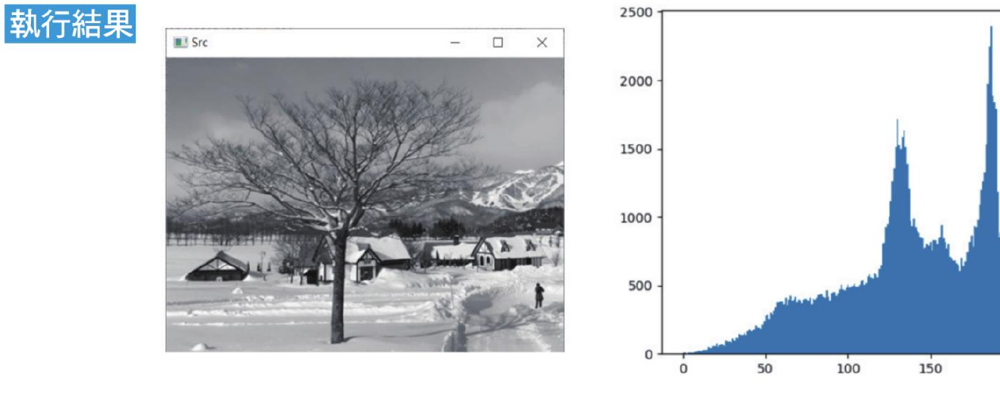
hist() 第 2 个参数是 256，表示将整体 x 轴的像素区分成 256 个区块。参考原书第 19-5 页。
ravel() 函数可以将影像从二维矩阵降至一维数组，所以可以使用 hist() 绘制整幅影像的直方图。如果要将 0-255 之间的像素切割成区间范围，例如切割成 20 个区间，相当于设定 bins=20。
程序实例 ch19_6.py：重新设计 ch19_5.py，设定 20 个区间
# ch19_6.py
import cv2
import matplotlib.pyplot as plt
src = cv2.imread("snow.jpg", cv2.IMREAD_GRAYSCALE)
cv2.imshow("Src", src)
plt.hist(src.ravel(), 20) # 降维再绘制直方图
plt.show()
cv2.waitKey(0)
cv2.destroyAllWindows()
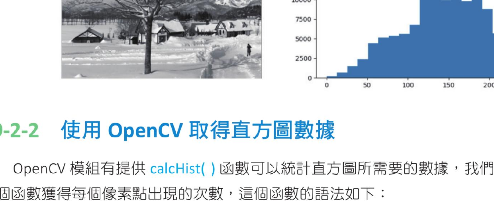
将灰阶范围分成 20 个区间后的直方图。参考原书第 19-6 页。
19-2-2 使用 OpenCV 取得直方图数据
OpenCV 模块提供 calcHist() 函数，可以统计直方图所需要的数据，取得每个像素点出现的次数。
hist = cv2.calcHist(src, channels, mask, histSize, ranges, accumulate)
| 参数 / 返回值 | 说明 |
|---|
hist | 返回各像素值统计结果，这是 NumPy 的数组资料结构。 |
src | 来源影像或原始影像。 |
channels | 影像通道；灰阶影像设为 [0]。彩色影像可设 [0]、[1]、[2]，分别代表 B、G、R。 |
mask | 设为 None 表示统计整幅影像；如果传入遮罩，只计算遮罩部分。 |
histSize | 相当于 hist() 函数的 bins 数量。例如 [256] 表示统计所有像素区块。 |
ranges | 像素值的范围，一般设为 [0, 256]。 |
accumulate | 选项参数，预设是 False。若处理多幅影像，可设为 True 以累加像素值。 |
程序实例 ch19_7.py：取得 snow.jpg 影像的直方图数据
# ch19_7.py
import cv2
src = cv2.imread("snow.jpg", cv2.IMREAD_GRAYSCALE)
cv2.imshow("Src", src)
hist = cv2.calcHist([src], [0], None, [256], [0, 256]) # 直方图统计资料
print(f"资料类型 = {type(hist)}")
print(f"资料外观 = {hist.shape}")
print(f"资料大小 = {hist.size}")
print(f"资料内容\n{hist}")
cv2.waitKey(0)
cv2.destroyAllWindows()
资料类型 = <class 'numpy.ndarray'>
资料外观 = (256, 1)
资料大小 = 256
资料内容
[[...]
[1253.]
[1199.]
...]
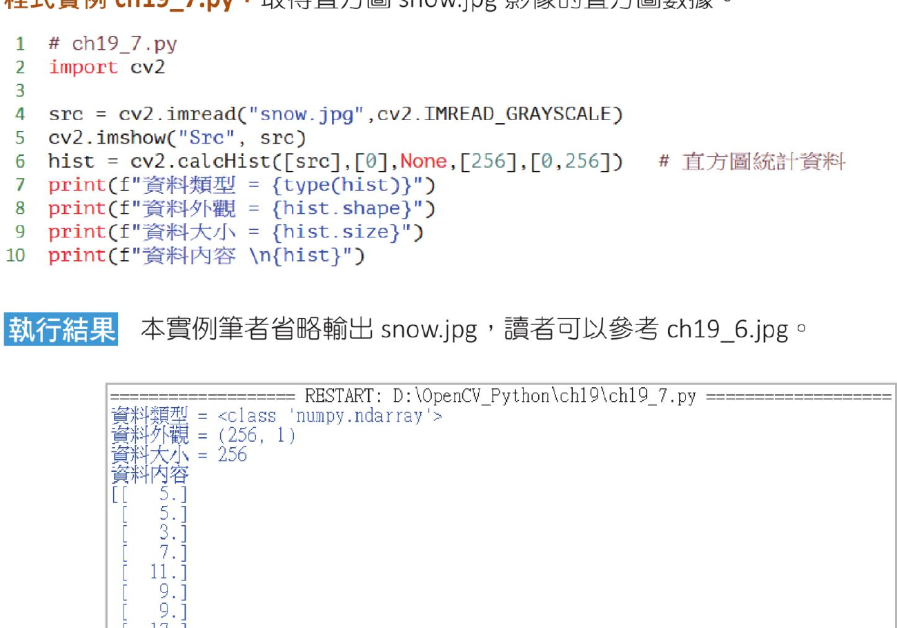
原书第 19-7 页的 Shell 输出画面；数组大小 256，对应 0 到 255 的所有像素值。
程序实例 ch19_8.py：使用 plot() 绘制 snow.jpg 影像的像素直方图
# ch19_8.py
import cv2
import matplotlib.pyplot as plt
src = cv2.imread("snow.jpg", cv2.IMREAD_GRAYSCALE)
cv2.imshow("Src", src)
hist = cv2.calcHist([src], [0], None, [256], [0, 256]) # 直方图统计资料
plt.plot(hist) # 用 plot() 绘直方图
plt.show()
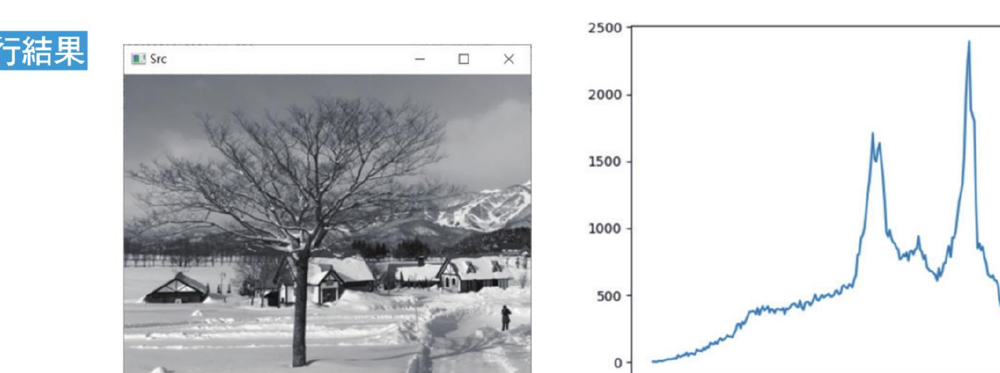
使用 calcHist() 取得统计资料后，再用 plot() 绘图。参考原书第 19-8 页。
19-2-3 绘制彩色影像的直方图
前一小节的观念也可以扩充到显示 B、G、R 通道像素值的直方图。
程序实例 ch19_9.py：绘制 macau.jpg 影像的 B、G、R 通道直方图
# ch19_9.py
import cv2
import matplotlib.pyplot as plt
src = cv2.imread("macau.jpg", cv2.IMREAD_COLOR)
cv2.imshow("Src", src)
b = cv2.calcHist([src], [0], None, [256], [0, 256]) # B 通道统计资料
g = cv2.calcHist([src], [1], None, [256], [0, 256]) # G 通道统计资料
r = cv2.calcHist([src], [2], None, [256], [0, 256]) # R 通道统计资料
plt.plot(b, color="blue", label="B channel") # 用 plot() 绘 B 通道
plt.plot(g, color="green", label="G channel") # 用 plot() 绘 G 通道
plt.plot(r, color="red", label="R channel") # 用 plot() 绘 R 通道
plt.legend(loc="best")
plt.show()
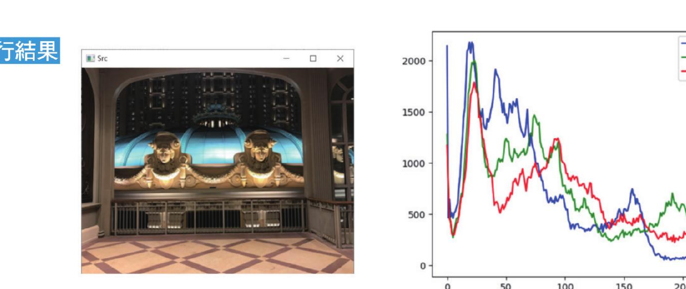
macau.jpg 原图与三通道直方图。参考原书第 19-8 页。
19-2-4 绘制遮罩的直方图
对整幅影像而言，有时候只想分析特定区块的像素，这时可以使用遮罩观念，然后将此遮罩应用在 calcHist() 函数。
程序实例 ch19_10.py：建立遮罩的方法，先建立一个影像区块，然后在此影像区块建立遮罩
# ch19_10.py
import cv2
import numpy as np
src = np.zeros([200, 400], np.uint8) # 建立影像
src[50:150, 100:300] = 255 # 在影像内建立遮罩
cv2.imshow("Src", src)
cv2.waitKey(0)
cv2.destroyAllWindows()
黑底白色矩形区块作为遮罩。参考原书第 19-9 页。
程序实例 ch19_11.py：扩充 ch19_10.py，在 macau.jpg 影像内建立遮罩
# ch19_11.py
import cv2
import numpy as np
src = cv2.imread("macau.jpg", cv2.IMREAD_GRAYSCALE)
cv2.imshow("Src", src)
mask = np.zeros(src.shape[:2], np.uint8) # 建立影像遮罩影像
mask[20:200, 50:400] = 255 # 在遮罩影像内建立遮罩
masked = cv2.bitwise_and(src, src, mask=mask) # and 运算
cv2.imshow("After Mask", masked)
cv2.waitKey(0)
cv2.destroyAllWindows()
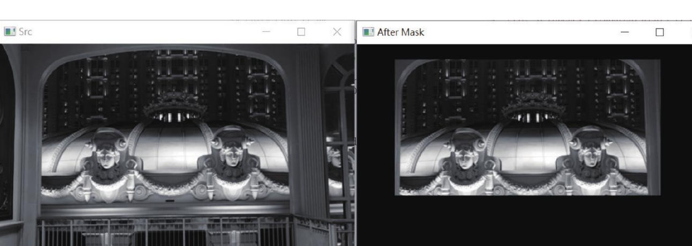
右图是 macau.jpg 影像的遮罩区。参考原书第 19-10 页。
程序实例 ch19_12.py：为整幅影像和遮罩区的影像建立像素值直方图
# ch19_12.py
import cv2
import numpy as np
import matplotlib.pyplot as plt
src = cv2.imread("macau.jpg", cv2.IMREAD_GRAYSCALE)
cv2.imshow("Src", src)
mask = np.zeros(src.shape[:2], np.uint8) # 建立影像遮罩影像
mask[20:200, 50:400] = 255 # 在遮罩影像内建立遮罩
hist = cv2.calcHist([src], [0], None, [256], [0, 256]) # 灰阶统计资料
hist_mask = cv2.calcHist([src], [0], mask, [256], [0, 256]) # 遮罩统计资料
plt.plot(hist, color="blue", label="Src Image") # 用 plot() 绘影像直方图
plt.plot(hist_mask, color="red", label="Mask") # 用 plot() 绘遮罩直方图
plt.legend(loc="best")
plt.show()
cv2.waitKey(0)
cv2.destroyAllWindows()
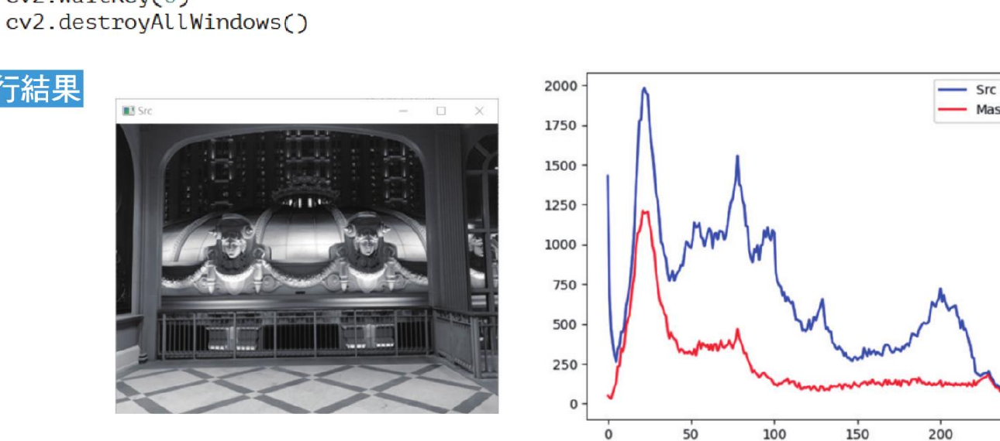
蓝色是整幅影像，红色是遮罩区统计资料。参考原书第 19-10 页。
程序实例 ch19_13.py：将 ch19_11.py 和 ch19_12.py 整合到一张图表
# ch19_13.py
import cv2
import numpy as np
import matplotlib.pyplot as plt
src = cv2.imread("macau.jpg", cv2.IMREAD_GRAYSCALE)
# 建立遮罩
mask = np.zeros(src.shape[:2], np.uint8) # 建立影像遮罩影像
mask[20:200, 50:400] = 255 # 在遮罩影像内建立遮罩
aftermask = cv2.bitwise_and(src, src, mask=mask)
hist_mask = cv2.calcHist([src], [0], mask, [256], [0, 256]) # 遮罩统计资料
hist = cv2.calcHist([src], [0], None, [256], [0, 256]) # 灰阶统计资料
# subplot() 第一个 2 代表垂直有 2 张图，第二个 2 代表左右有 2 张图
# subplot() 第三个参数代表子图编号
plt.subplot(221) # 建立子图 1
plt.imshow(src, "gray") # 灰阶显示第 1 张图
plt.subplot(222) # 建立子图 2
plt.imshow(mask, "gray") # 灰阶显示第 2 张图
plt.subplot(223) # 建立子图 3
plt.imshow(aftermask, "gray") # 灰阶显示第 3 张图
plt.subplot(224) # 建立子图 4
plt.plot(hist, color="blue", label="Src Image")
plt.plot(hist_mask, color="red", label="Mask")
plt.legend(loc="best")
plt.show()
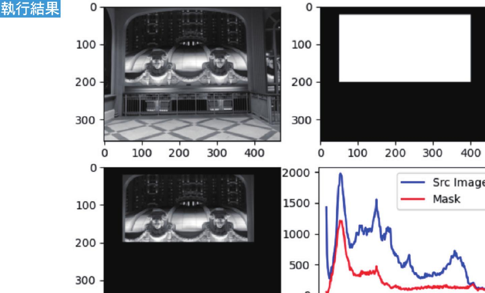
原图、遮罩、遮罩后影像与直方图整合在一张图。参考原书第 19-11 页。
19-3
直方图均衡化
如果影像灰阶值集中在一个窄的区域，容易造成影像细节不清楚。所谓直方图均衡化，就是对影像灰阶值拉宽，重新分配灰阶值散布在所有像素空间，进而增强影像细节。
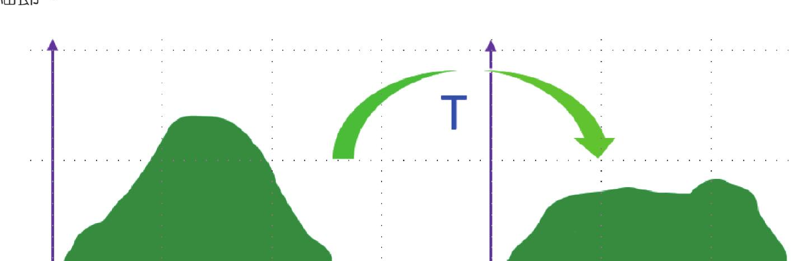
将集中的灰阶分布拉宽到较完整的范围。参考原书第 19-12 页。
通常过暗或过亮的图，往往是灰阶值过度集中在某一区域的结果。过暗影像的灰阶值集中在左边；过亮影像的灰阶值集中在右边。
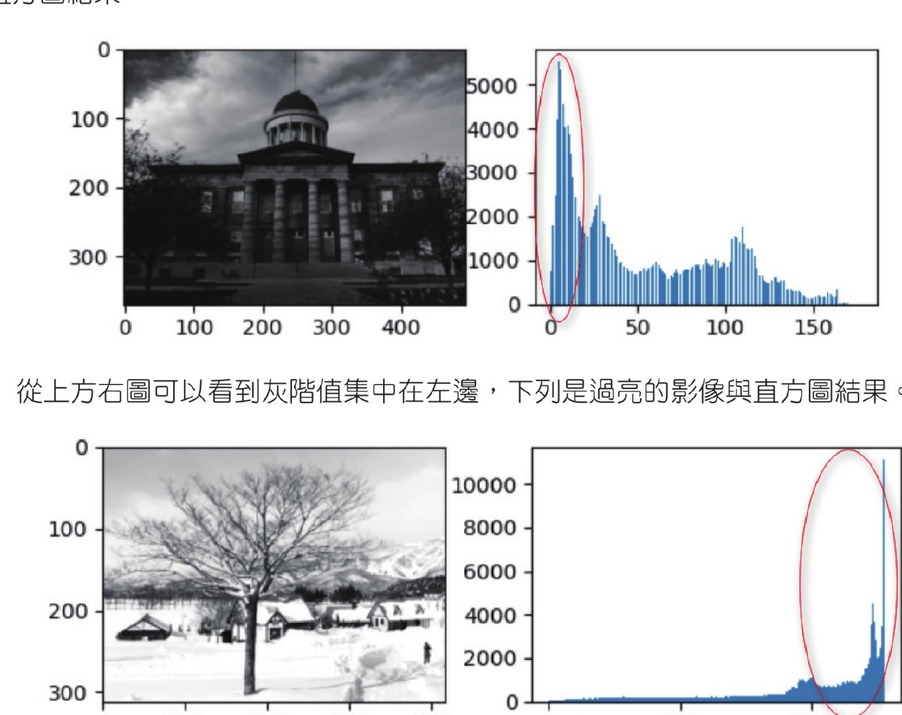
上方为过暗影像，下方为过亮影像。参考原书第 19-12 页。
19-3-1 直方图均衡化算法
直方图均衡化有两个步骤：计算累积的直方图数据；将累积的直方图执行区间转换。书中以一个 5 x 5 影像为例，假设影像灰阶值范围是 [0, 7]，先统计灰阶值、像素个数、出现概率，再计算累计概率。
| 灰阶值级 | 0 | 1 | 2 | 3 | 4 | 5 | 6 | 7 |
|---|
| 像素个数 | 4 | 3 | 2 | 2 | 2 | 2 | 5 | 5 |
| 出现概率 | 0.16 | 0.12 | 0.08 | 0.08 | 0.08 | 0.08 | 0.20 | 0.20 |
| 累计概率 | 0.16 | 0.28 | 0.36 | 0.44 | 0.52 | 0.60 | 0.80 | 1.00 |
接着有两种均衡化方法：在原有范围执行均衡化，或在更广泛的范围执行均衡化。在原有范围执行时，用最大灰阶值级 7 乘以累计概率，并四舍五入得到新的灰阶值级。
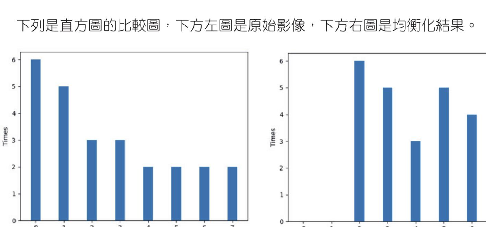
左图是原始直方图，右图是在原有灰阶范围执行均衡化后的结果。参考原书第 19-14 页。
在更广泛的范围执行均衡化时，使用更广泛的灰阶值级乘以累计概率。例如将灰阶值扩展到 [0, 255]，可用 255 乘以累计概率，得到更广泛的灰度值级。
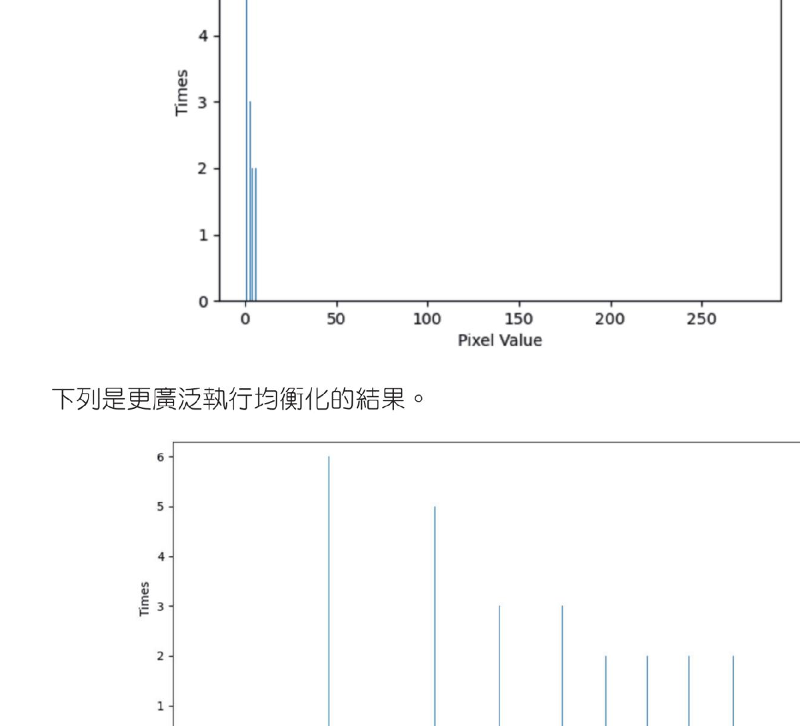
将灰阶值扩展到 [0, 255] 后，直方图分布范围变得更广。参考原书第 19-15 页。
19-3-2 直方图均衡化 equalizeHist()
OpenCV 已经将均衡化方法封装在 equalizeHist() 函数内，可以直接调用。
dst = cv2.equalizeHist(src)
上述 src 是 8 位元的单通道影像，dst 是直方图均衡化的结果。
程序实例 ch19_14.py：snow1.jpg 是过度曝光太亮的影像，使用直方图均衡化
# ch19_14.py
import cv2
import matplotlib.pyplot as plt
src = cv2.imread("snow1.jpg", cv2.IMREAD_GRAYSCALE)
plt.subplot(221) # 建立子图 1
plt.imshow(src, "gray") # 灰阶显示第 1 张图
plt.subplot(222) # 建立子图 2
plt.hist(src.ravel(), 256) # 降维再绘制直方图
plt.subplot(223) # 建立子图 3
dst = cv2.equalizeHist(src) # 均衡化处理
plt.imshow(dst, "gray") # 显示执行均衡化的结果影像
plt.subplot(224) # 建立子图 4
plt.hist(dst.ravel(), 256) # 降维再绘制直方图
plt.show()
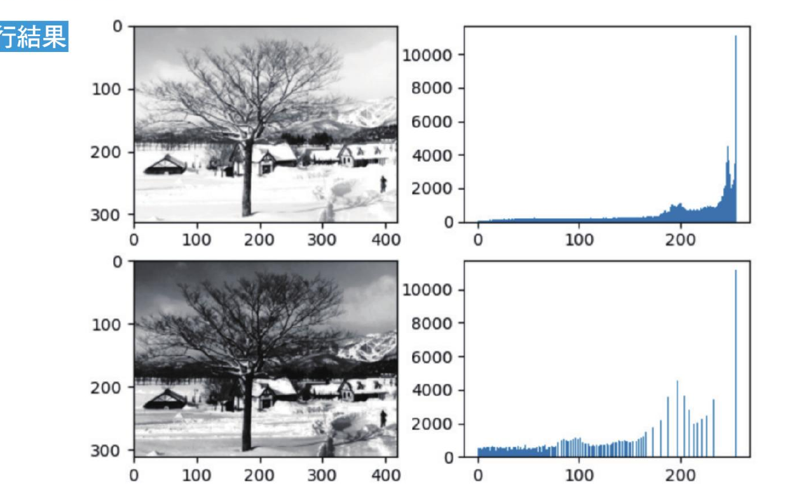
过亮影像经过均衡化后，灰阶分布被重新拉开。参考原书第 19-16 页。
程序实例 ch19_15.py：springfield.jpg 是过暗影像，使用直方图均衡化
# ch19_15.py
# 与 ch19_14.py 相同，只将读取文件改成 springfield.jpg。
src = cv2.imread("springfield.jpg", cv2.IMREAD_GRAYSCALE)
程序实例 ch19_16.py：去除雾的实例
# ch19_16.py
# 与 ch19_14.py 相同，只将读取文件改成 highway1.png。
src = cv2.imread("highway1.png", cv2.IMREAD_GRAYSCALE)
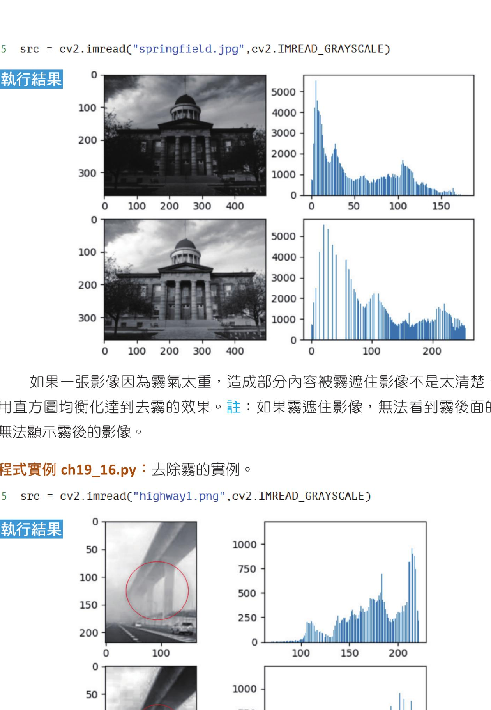
上半部是 springfield.jpg 过暗影像均衡化，下半部是 highway1.png 去雾实例；参考原书第 19-17 页。
19-3-3 直方图均衡化应用在彩色影像
直方图均衡化也可以应用在彩色影像。做法是将彩色影像拆成 B、G、R 通道，分别均衡化后再合并。
程序实例 ch19_17.py：使用 springfield.jpg，执行彩色影像的直方图均衡化
# ch19_17.py
import cv2
src = cv2.imread("springfield.jpg", cv2.IMREAD_COLOR)
cv2.imshow("Src", src)
(b, g, r) = cv2.split(src) # 拆开彩色影像通道
blue = cv2.equalizeHist(b) # 均衡化 B 通道
green = cv2.equalizeHist(g) # 均衡化 G 通道
red = cv2.equalizeHist(r) # 均衡化 R 通道
dst = cv2.merge((blue, green, red)) # 合并通道
cv2.imshow("Dst", dst)
cv2.waitKey(0)
cv2.destroyAllWindows()
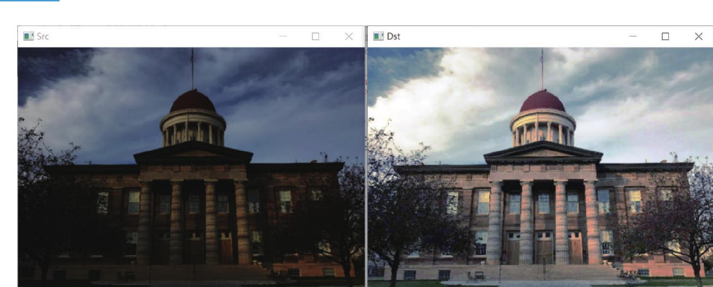
右图是彩色图均衡化的结果。参考原书第 19-18 页。
19-4
限制自适应直方图均衡化方法
限制自适应直方图均衡化方法英文是 Contrast Limited Adaptive Histogram Equalization，简称 CLAHE。这是直方图均衡化方法的改良，有时也简称自适应直方图均衡化。
19-4-1 直方图均衡化的优缺点
直方图通过扩展影像的强度分布范围，增加影像对比度，可以处理过亮、过暗的影像或达到去雾效果。但是也会产生缺点：因为是全局处理，背景噪声对比度也会增加；有用信号对比度降低，例如特别暗或特别亮的有用信号对比度会降低。
19-4-2 直方图均衡化的缺点实例
有一幅 office.jpg 影像，背景有一点暗，想要让背景影像变亮。使用普通直方图均衡化时，因为是全局影像处理，背景会变亮，但脸部也会变亮，同时脸部细节消失。
程序实例 ch19_18.py：使用直方图均衡化处理 office.jpg
# ch19_18.py
import cv2
src = cv2.imread("office.jpg", cv2.IMREAD_GRAYSCALE)
cv2.imshow("Src", src)
equ = cv2.equalizeHist(src) # 直方图均衡化
cv2.imshow("equalizeHist", equ)
cv2.waitKey(0)
cv2.destroyAllWindows()
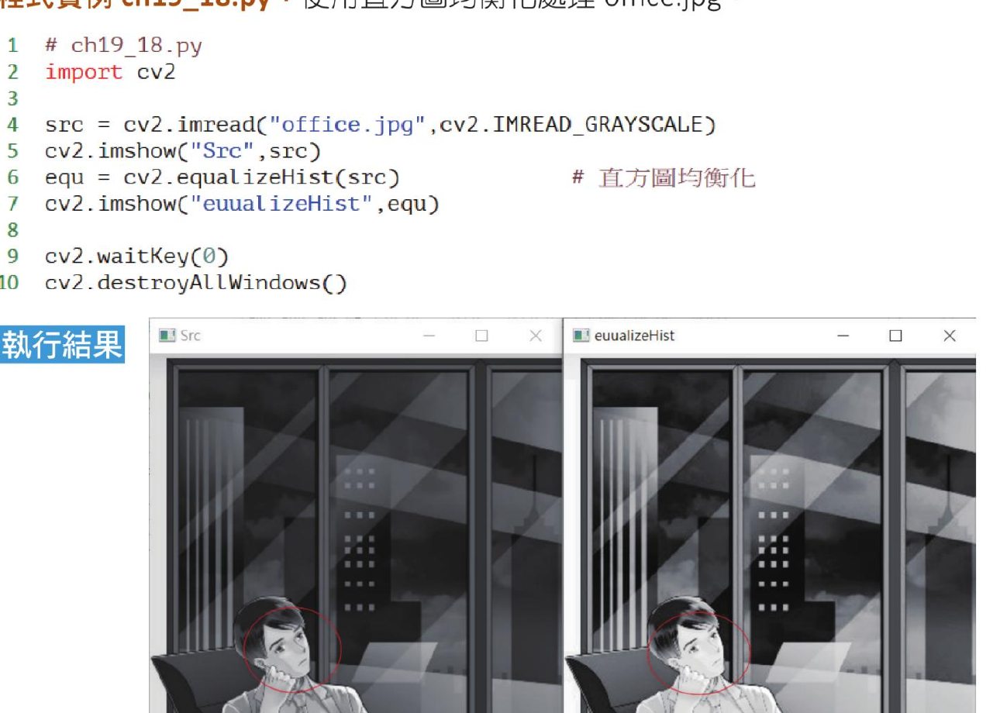
背景变亮，但圈选脸部也变亮且细节减少。参考原书第 19-19 页。
19-4-3 自适应直方图函数 createCLAHE() 和 apply() 函数
自适应直方图函数 createCLAHE() 可以改良 ch19_18.py 的缺点。
clahe = cv2.createCLAHE(clipLimit, tileGridSize)
| 参数 / 返回值 | 说明 |
|---|
clahe | 产生自适应直方图物件。 |
clipLimit | 可选参数，每次对比度大小，建议使用 2。 |
tileGridSize | 可选参数，每次处理区块的大小，建议使用 (8, 8)。 |
上述函数返回自适应直方图 clahe 物件，然后使用此物件与灰阶影像关联。
dst = clahe.apply(src_gray) # src_gray 是灰阶影像物件
程序实例 ch19_19.py：使用自适应直方图函数，重新设计 ch19_18.py
# ch19_19.py
import cv2
import matplotlib.pyplot as plt
src = cv2.imread("office.jpg", cv2.IMREAD_GRAYSCALE)
cv2.imshow("Src", src)
# 自适应直方图均衡化
clahe = cv2.createCLAHE(clipLimit=2.0, tileGridSize=(8, 8))
dst = clahe.apply(src) # 灰度影像与 clahe 物件关联
cv2.imshow("CLAHE", dst)
cv2.waitKey(0)
cv2.destroyAllWindows()
右图背景变亮，同时脸部细节被保留下来。参考原书第 19-20 页。
1. 使用 springfield.jpg 文件，将影像使用自适应直方图均衡化处理，同时列出灰阶值直方图。
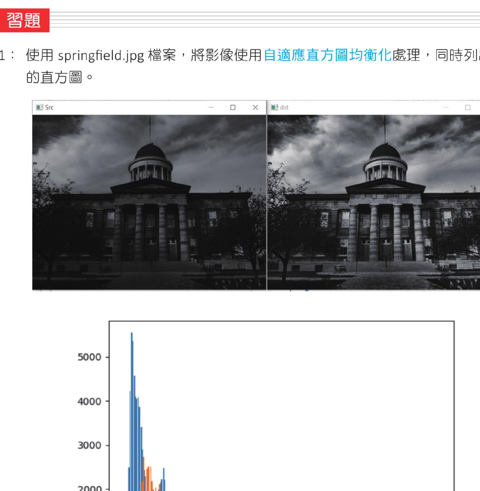
橘色部分灰阶强度分布是自适应直方图的灰阶强度结果。参考原书第 19-21 页。
2. 扩充设计 ch19_18.py 和 ch19_19.py，建立原始影像、直方图均衡化影像和自适应直方图均衡化影像，最后同时列出 3 种影像的直方图。
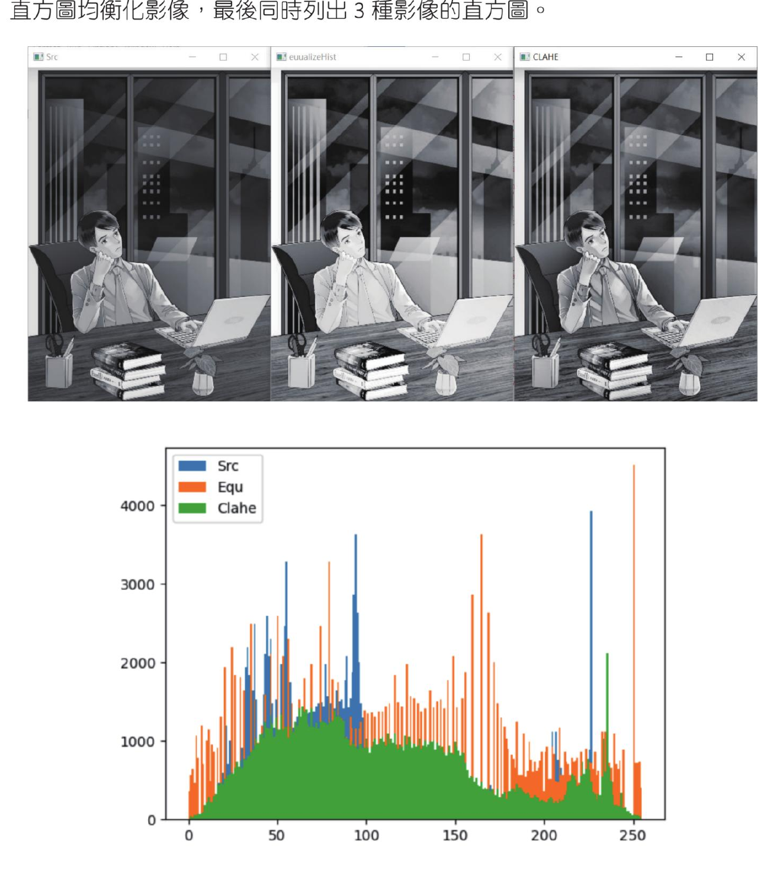
原始影像、一般均衡化影像与 CLAHE 影像的比较。参考原书第 19-22 页。